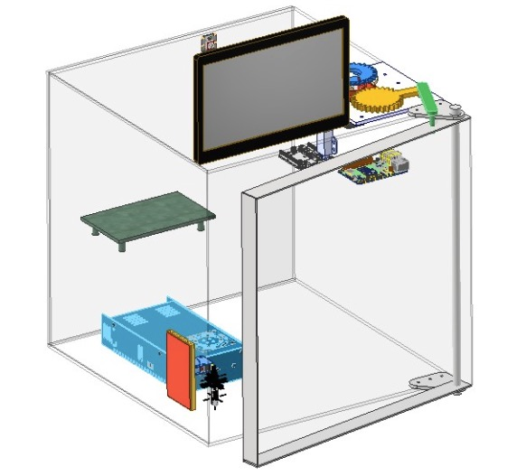
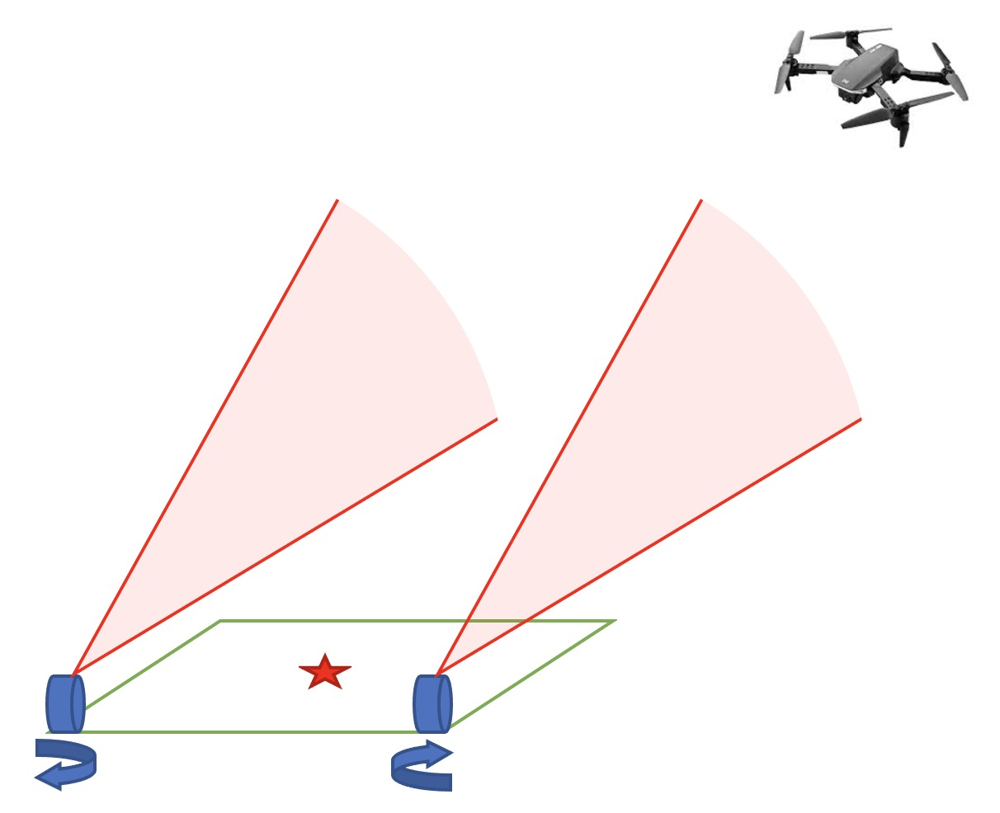

  <!-- Header / Hero -->
  {% include header.html %}

  <!-- Main Content -->
  <main id="pagecontainer">
    <section class="inner-page">
      <hr class="custom-hr" />
      <section class="news-section" aria-labelledby="news">
        <div class="news-header">
          <h2 id="news" class="news-title">News</h2>
          <p class="news-subtitle">Recent updates on papers, research, and more activities.</p>
        </div>
        <div class="news-list">
          <article class="news-item">
            <div class="news-date">Sep. 2026</div>
            <div class="news-content">
              <p><strong>SimFoundry</strong>, <em>Modular and Automated Scene Generation for Policy Learning and Evaluation</em>, was accepted to <strong>CoRL 2026</strong> and is now available on <a href="https://arxiv.org/abs/2606.28276" target="_blank" rel="noopener noreferrer">arXiv</a>.</p>
            </div>
          </article>
          <article class="news-item">
            <div class="news-date">Jun. 2026</div>
            <div class="news-content">
              <p><strong>Reliability-Aware Monocular Depth Supervision for Sparse-View Neural Reconstruction</strong> is now available on <a href="https://arxiv.org/abs/2607.02554" target="_blank" rel="noopener noreferrer">arXiv</a>.</p>
            </div>
          </article>
          <article class="news-item">
            <div class="news-date">Jun. 2026</div>
            <div class="news-content">
              <p>I received the <strong><a href="https://www.foxconnfoundation.org/plan/technology_award/" target="_blank" rel="noopener noreferrer">Foxconn Technology Award</a></strong> from the <strong><a href="https://www.foxconnfoundation.org/" target="_blank" rel="noopener noreferrer">Hon Hai Education Foundation</a></strong>.</p>
            </div>
          </article>
        </div>
        <div class="news-archive">
          <details>
            <summary>
              <span class="summary-closed">Show older updates</span>
              <span class="summary-open">Hide older updates</span>
            </summary>
            <div class="news-archive-list">
              <article class="news-item">
                <div class="news-date">Apr. 2026</div>
                <div class="news-content">
                  <p>Starting in June 2026, I will join <strong><a href="https://www.nimble.ai/" target="_blank" rel="noopener noreferrer">Nimble</a></strong> as an <strong>AI Robotics Research Intern</strong>.</p>
                </div>
              </article>
              <article class="news-item">
                <div class="news-date">Mar. 2026</div>
                <div class="news-content">
                  <p><strong>FINS</strong>, <em>Efficient Construction of Implicit Surface Models From a Single Image for Motion Generation</em>, was accepted to ICRA 2026 and is now available on <a href="https://arxiv.org/abs/2509.20681" target="_blank" rel="noopener noreferrer">arXiv</a>.</p>
                </div>
              </article>
              <article class="news-item">
                <div class="news-date">Sep. 2025</div>
                <div class="news-content">
                  <p>I joined <a href="https://svl.stanford.edu/" target="_blank" rel="noopener noreferrer">the Stanford Vision and Learning Lab (SVL)</a> at Stanford, advised by <a href="https://engineering.stanford.edu/people/fei-fei-li" target="_blank" rel="noopener noreferrer">Prof. Fei-Fei Li</a>.</p>
                </div>
              </article>
              <article class="news-item">
                <div class="news-date">Sep. 2025</div>
                <div class="news-content">
                  <p>I began my M.S. in Electrical Engineering at Stanford University, focusing on robotics and computer vision.</p>
                </div>
              </article>
            </div>
          </details>
        </div>
      </section>

      <p class="section-kicker">🌟 Highlight 🌟</p>

      <p>
        I'm a graduate researcher at the <a href="https://svl.stanford.edu/" target="_blank" rel="noopener noreferrer">Stanford Vision and Learning Lab</a>, collaborating with <a href="https://research.nvidia.com/labs/gear/" target="_blank" rel="noopener noreferrer">NVIDIA GEAR</a> on SimFoundry, a real-to-sim-to-real pipeline for training and evaluating robot manipulation policies. Earlier, I deployed real-time perception models on robots and vehicles at ITRI, and conducted remote research on 3D reconstruction with
        <a href="https://www.weimingzhi.com/home" target="_blank" rel="noopener noreferrer">Prof. Weiming Zhi</a> and <a href="https://tyz1030.github.io/#about" target="_blank" rel="noopener noreferrer">Dr. Tianyi Zhang</a> at <a href="https://droplab.ri.cmu.edu/" target="_blank" rel="noopener noreferrer">the DROP Lab</a>, Carnegie Mellon University.
      </p>

      <!-- Hero media row -->
      <div class="highlight-row">
        <div class="highlight-internship-media">
          
        </div>
        <div class="highlight-clip-container">
          <div class="clip-wrapper">
            <video src="media/research/sdf_buddha.mp4" class="highlight-clip" width="800" height="800" autoplay muted loop playsinline preload="metadata" aria-label="FINS signed distance field reconstruction demo"></video>
          </div>
        </div>
        <div class="highlight-internship-media">
          <video src="media/research/franka_side.mp4" class="highlight-image" width="800" height="567" autoplay muted loop playsinline preload="metadata" aria-label="Robotic arm surface-following demo"></video>
        </div>
      </div>

      <!-- Education -->
      <h2 id="education" class="title">Education</h2>
      <div class="education">
        <!-- Stanford -->
        <article class="education-item stanford">
          <div class="edu-header"><h3>Stanford University, CA</h3></div>
          <div class="edu-content">
            <div class="education-text">
              <p class="degree">M.S. Student, Electrical Engineering</p>
              <p>Concentration: Robotics / Computer Vision</p>
              <ul>
                <!-- <li><strong>GPA:</strong> N/A</li> -->
                <li><strong>Duration:</strong> Sep. 2025 - Apr. 2027 (Expected)</li>
              </ul>
            </div>
            <div class="school-logo-box" aria-label="Stanford University Logo">
              
            </div>
          </div>
        </article>

        <!-- NTHU -->
        <article class="education-item nthu">
          <div class="edu-header"><h3>National Tsing Hua University, Taiwan</h3></div>
            <div class="edu-content">
              <div class="education-text">
              <p class="degree">Bachelor of Science in <a href="https://ipe.site.nthu.edu.tw/index.php?Lang=en" target="_blank" rel="noopener noreferrer">Interdisciplinary Program of Engineering</a></p>
              <p>Concentration: Electrical Engineering / Power Mechanical Engineering</p>
                <ul>
                  <li><strong>Graduated with Distinction</strong></li>
                  <li><strong>GPA:</strong> 4.15 / 4.30</li>
                  <li><strong>Duration:</strong> Sep. 2020 - Jan. 2024</li>
                </ul>
              </div>
            <div class="school-logo-box" aria-label="National Tsing Hua University Logo">
              
            </div>
          </div>
        </article>
        </div>

      <!-- Internships -->
      <h2 id="internship-experience" class="title">Work Experience</h2>
      <section class="internships">
        <article class="internship-item">
          <div class="internship-media">
            
          </div>
          <div class="internship-details">
            <h3 class="company-name"><a href="https://nimble.ai/" target="_blank" rel="noopener noreferrer">Nimble</a></h3>
            <p class="internship-title"><strong>AI Robotics Research Intern</strong></p>
            <p class="internship-date">Jun. 2026 - Sep. 2026</p>
            <p class="internship-description">
              I built a <strong>bimanual Isaac Sim digital twin</strong> of the dual-arm Piper X cell for sim demo collection, and shipped <strong>GELLO leader-arm teleoperation</strong> across both sim and the real robot to give the team a single interface for capturing human demos. To scale training data, I multiplied a handful of human demos into large datasets through <strong>object-centric keyframe transport</strong>, synthetic motion primitives, and layout randomization, then fine-tuned <strong>&pi;<sub>0</sub> and &pi;<sub>0.5</sub> VLA policies</strong> (openpi, LoRA) on the sim-collected demos, reaching a <strong>96.9% success rate</strong> in sim. To close the visual sim-to-real gap, I reconstructed the workspace with <strong>3D Gaussian splatting</strong> paired with a <strong>collision mesh</strong> the robot can physically touch.
            </p>
          </div>
        </article>

        <article class="internship-item">
          <div class="internship-media">
            
          </div>
          <div class="internship-details">
            <h3 class="company-name"><a href="https://ai.stanford.edu/" target="_blank" rel="noopener noreferrer">Stanford Artificial Intelligence Laboratory (SAIL)</a></h3>
            <p class="internship-title"><strong>Graduate Researcher @ <a href="https://svl.stanford.edu/" target="_blank" rel="noopener noreferrer">Stanford Vision and Learning Lab</a></strong></p>
            <p class="internship-date">Sep. 2025 - May 2026</p>
            <p class="internship-description">
              I contribute to <a href="https://research.nvidia.com/labs/gear/simfoundry/" target="_blank" rel="noopener noreferrer">SimFoundry</a>, a collaboration between the Stanford Vision and Learning Lab and NVIDIA GEAR that builds digital replicas of real-world scenes from video and automatically generates diverse <em>digital cousins</em> to train and evaluate robot manipulation policies. My contributions include building the <strong>object cousins asset generation pipeline</strong> and a <strong>FoundationPose-based ground-truth pose generation pipeline</strong>, <strong>collecting reconstructed scenes</strong>, developing an <strong>interactive object-cousins hot-swapping script</strong>, and <strong>optimizing the object removal algorithm</strong> in the scene decomposition step. Policies trained on the generated variations improve real-world success rates by 17-40% on average.
            </p>
            <div class="resource-links">
              <a href="https://arxiv.org/abs/2606.28276" class="resource-btn" target="_blank" rel="noopener noreferrer">arXiv</a>
              <a href="https://research.nvidia.com/labs/gear/simfoundry/" class="resource-btn" target="_blank" rel="noopener noreferrer">Project Page</a>
            </div>
          </div>
        </article>

        <article class="internship-item">
          <div class="internship-media">
            
          </div>
          <div class="internship-details">
            <h3 class="company-name"><a href="https://www.itri.org.tw/english/" target="_blank" rel="noopener noreferrer">Industrial Technology Research Institute (ITRI)</a></h3>
            <p class="internship-title"><strong>Automotive AI Algorithm Development Intern</strong></p>
            <p class="internship-date">Sep. 2024 - Nov. 2024, Mar. 2025 - Jul. 2025</p>
            <div class="internship-description">
              <h4>Mask2Former Semantic Segmentation</h4>
              <p>I built a custom semantic segmentation pipeline for robotics and autonomous driving by merging and re-annotating <strong>Mapillary and ADE20k</strong>, converting the data to COCO format, and training <strong>Mask2Former</strong> with <strong>NVIDIA TAO Toolkit</strong>. The final model was deployed in <strong>ROS2</strong> and delivered <strong>real-time inference at about 15 FPS</strong> on robot and vehicle platforms.</p>
              <div class="clip-container"><div class="clip-wrapper"><video src="media/demos/merged_dog_.mp4" class="internship-clip" width="960" height="540" autoplay muted loop playsinline preload="metadata" aria-label="Semantic segmentation demo on a quadruped robot"></video></div></div>
              <h4>Person Re-Identification (Re-ID)</h4>
              <p>I developed a real-time pedestrian detection and re-identification pipeline using <strong>YOLO11n</strong>, <strong>OSNet</strong>, and <strong>cosine-similarity matching</strong>. By exporting models to <strong>ONNX and TensorRT</strong> for acceleration, the system achieved <strong>about 25 FPS</strong> and was suitable for robotics and automotive deployment.</p>
              <div class="clip-container"><div class="clip-wrapper"><video src="media/demos/reid_tracker_.mp4" class="internship-clip" width="1348" height="779" autoplay muted loop playsinline preload="metadata" aria-label="Person re-identification tracking demo"></video></div></div>
              
              <h4>Sim2Real Quadruped Robot Terrain Traversal</h4>
              <p>I developed a <strong>sim-to-real terrain traversal</strong> pipeline for the <strong>Unitree Go2</strong> that combined Gazebo simulation, RealSense point clouds, and <strong>elevation mapping</strong> for locomotion over uneven ground. I also integrated point-cloud processing with <strong>reinforcement learning gait policies</strong>, added <strong>VIO</strong> and <strong>forward kinematics</strong> to handle sensor interruptions, and validated the full system on the physical robot.</p>
              <div class="clip-container"><div class="clip-wrapper"><video src="media/demos/real_go2_walk_.mp4" class="internship-clip" width="981" height="607" autoplay muted loop playsinline preload="metadata" aria-label="Unitree Go2 terrain traversal demo"></video></div></div>
            </div>
          </div>
        </article>

        <article class="internship-item">
          <div class="internship-media">
            
          </div>
          <div class="internship-details">
            <h3 class="company-name"><a href="https://www.foxconn.com/en-us/" target="_blank" rel="noopener noreferrer">Foxconn</a></h3>
            <p class="internship-title"><strong>Technology Innovation Group of Chairman Office Intern</strong></p>
            <p class="internship-date">Jun. 2024 - Sep. 2024</p>
            <p class="internship-description">
              I built an Android in-vehicle app for voice-based A/C control, making HVAC adjustment more intuitive for drivers. The end-to-end pipeline connected Azure Speech Service, Dialogflow intent parsing, and CarAPI to execute temperature control commands in the vehicle.</p>
            <div class="resource-links">
              <a href="https://youtu.be/v93JM6Mi8BI" class="resource-btn" target="_blank" rel="noopener noreferrer">Video</a>
            </div>
          </div>
        </article>
      </section>

      <!-- Research & Projects -->
      <h2 id="research-and-project" class="title">Research &amp; Projects</h2>
      
      <article class="featured-research featured-research--nvidia">
        <div class="featured-research-media">
          <video class="featured-research-image" width="1280" height="720" autoplay muted loop playsinline preload="metadata" poster="media/research/simfoundry_poster.jpg">
            <source src="media/research/simfoundry.mp4" type="video/mp4" />
          </video>
        </div>
        <div class="featured-research-body">
          <p class="featured-label">Featured Research</p>
          <h3 class="project-title">SimFoundry: Modular and Automated Scene Generation for Policy Learning and Evaluation</h3>
          <div class="featured-meta">
            <span>Oct. 2025 - May 2026</span>
            <span><a href="https://svl.stanford.edu/" target="_blank" rel="noopener noreferrer">Stanford Vision and Learning Lab</a> &amp; <a href="https://research.nvidia.com/labs/gear/" target="_blank" rel="noopener noreferrer">NVIDIA GEAR</a></span>
            <span>CoRL 2026</span>
          </div>
          <p class="featured-summary">
            A collaboration between the Stanford Vision and Learning Lab and NVIDIA GEAR, with <a href="https://engineering.stanford.edu/people/fei-fei-li" target="_blank" rel="noopener noreferrer">Prof. Fei-Fei Li</a>, <a href="https://cs.utexas.edu/~yukez/" target="_blank" rel="noopener noreferrer">Prof. Yuke Zhu</a>, and colleagues.<br>
            SimFoundry builds <strong>digital replicas of real-world scenes directly from video</strong> and automatically generates diverse <em>digital cousins</em>, scene variations that preserve <strong>task-relevant structure</strong> and are used to train and evaluate robot manipulation policies.
            Across a range of tasks, <strong>simulated performance correlates strongly with real-world results</strong>, and policies trained on the generated variations <strong>improve real-world success rates by 17-40% on average</strong>.
          </p>
          <div class="resource-links">
            <a href="https://arxiv.org/abs/2606.28276" class="resource-btn" target="_blank" rel="noopener noreferrer">arXiv</a>
            <a href="https://research.nvidia.com/labs/gear/simfoundry/" class="resource-btn" target="_blank" rel="noopener noreferrer">Project Page</a>
          </div>
        </div>
      </article>

      <article class="featured-research">
        <div class="featured-research-media">
          <video src="media/research/franka_side.mp4" class="featured-research-image" width="800" height="567" autoplay muted loop playsinline preload="metadata" aria-label="FINS robotic surface-following experiment"></video>
        </div>
        <div class="featured-research-body">
          <p class="featured-label">Featured Research</p>
          <h3 class="project-title">Efficient Construction of Implicit Surface Models From a Single Image for Motion Generation</h3>
          <div class="featured-meta">
            <span>Mar. 2025 - Sep. 2025</span>
            <span><a href="https://droplab.ri.cmu.edu/" target="_blank" rel="noopener noreferrer">DROP Lab</a>, Carnegie Mellon University</span>
            <span> ICRA 2026 </span>
          </div>
          <p class="featured-summary">
            Advised by <a href="https://tyz1030.github.io/#about" target="_blank" rel="noopener noreferrer">Dr. Tianyi Zhang</a>, <a href="https://engineering.vanderbilt.edu/bio/?pid=matthew-johnson-roberson" target="_blank" rel="noopener noreferrer">Prof. Matthew Johnson-Roberson</a>, and <a href="https://www.weimingzhi.com/home" target="_blank" rel="noopener noreferrer">Prof. Weiming Zhi</a><br>
            We present Fast Image-to-Neural Surface (FINS), a lightweight framework capable of reconstructing high fidelity signed distance fields (SDF) from a single image in <strong>10 seconds</strong>.
            Our method fuses a multi-resolution hash grid and efficient optimization to achieve state-of-the-art accuracy while being an <strong>order of magnitude faster</strong> than existing methods.
            The scalability and real-world usability of FINS were also tested through robotic surface-following experiments, showing its utility in a wide range of tasks and datasets.
          </p>
          <div class="resource-links">
            <a href="https://arxiv.org/abs/2509.20681" class="resource-btn" target="_blank" rel="noopener noreferrer">arXiv</a>
            <a href="media/research/FINS_Poster.pdf" class="resource-btn">Poster</a>
            <a href="https://github.com/waynechu1109/FINS" class="resource-btn" target="_blank" rel="noopener noreferrer">Code</a>
            <a href="https://waynechu1109.github.io/fins.github.io/" class="resource-btn" target="_blank" rel="noopener noreferrer">Project Page</a>
          </div>
        </div>
      </article>

      <h3 class="title" style="margin-top:2em">Selected Projects</h3>
      <section class="projects">
        <article class="project-item google-logo">
          <div class="project-media"></div>
          <div class="project-details">
            <h3 class="project-title">Smart Fridge</h3>
            <p class="project-duration">Jun. 2024 - Sep. 2024</p>
            <p class="project-location">Google Hardware Product Sprint (HPS) Program</p>
            <p class="project-description">
              I developed a smart refrigerator system that combined food recognition, expiration tracking, and recipe recommendation with <strong>Google Gemini</strong>. The project focused on turning inventory awareness into actionable suggestions, helping users <strong>reduce food waste</strong> by surfacing recipes based on soon-to-expire ingredients.</p>
            <div class="resource-links">
              <a href="https://drive.google.com/drive/folders/1cRpE48WuzvNL2ulp7dlx_5jeWnp0vrvi" class="resource-btn" target="_blank" rel="noopener noreferrer">Poster</a>
              <a href="slides/Smart Fridge Final Presentation.pptx.pdf" class="resource-btn">Slides</a>
              <a href="https://github.com/waynechu1109/Google_HPS_Smart_Fridge_-Food-Recognition-" class="resource-btn" target="_blank" rel="noopener noreferrer">Code</a>
            </div>
          </div>
        </article>

        <article class="project-item nthu-logo">
          <div class="project-media"></div>
          <div class="project-details">
            <h3 class="project-title">Laser-Assisted Guidance Landing Technology for Drones</h3>
            <p class="project-duration">Jan. 2023 - Nov. 2023</p>
            <p class="project-location"><a href="http://hscc.cs.nthu.edu.tw" target="_blank" rel="noopener noreferrer">[HSCC Lab]</a>, National Tsing Hua University</p>
            <p class="project-description">Advised by <a href="http://hscc.cs.nthu.edu.tw/~sheujp/" target="_blank" rel="noopener noreferrer">Prof. Jang-Ping Sheu</a>. <br> 
              I developed a laser-assisted landing system to improve drone landing accuracy in settings where GPS can drift by several meters. By combining embedded electronics, 3D-printed mechanical design, and low-power laser sensing, the system achieved <strong>30-40 cm landing accuracy</strong> and demonstrated the feasibility of laser-based localization for future UAV platforms.</p>
            <div class="resource-links">
              <a href="https://drive.google.com/drive/folders/1o3hIwAdn8HWKZkmYq9HUBYTKjKqbptRA?usp=sharing" class="resource-btn" target="_blank" rel="noopener noreferrer">Report</a>
              <a href="slides/MASS2024.pdf" class="resource-btn">Slides</a>
              <a href="https://youtu.be/gLfIuNrkDxw" class="resource-btn" target="_blank" rel="noopener noreferrer">Video</a>
              <a href="paper/Laser-Assisted_Guidance_Landing_Technology_for_Drones.pdf" class="resource-btn">Paper</a>
            </div>
          </div>
        </article>

        <article class="project-item ucsd-logo">
          <div class="project-media"><video src="media/projects/MURO.mp4" class="project-image" width="800" height="502" autoplay muted loop playsinline preload="metadata" aria-label="TurtleBot4 obstacle avoidance demo"></video></div>
          <div class="project-details">
            <h3 class="project-title">Dodging Dynamical Obstacles Using TurtleBot4 Camera Feed</h3>
            <p class="project-duration">Jun. 2023 - Aug. 2023</p>
            <p class="project-location"><a href="http://muro.ucsd.edu" target="_blank" rel="noopener noreferrer">[MURO Lab]</a>, UC San Diego</p>
            <p class="project-description">Supervised by <a href="http://terrano.ucsd.edu/jorge/" target="_blank" rel="noopener noreferrer">Prof. Jorge Cortés</a>. <br>
              I built a <strong>real-time dynamic obstacle avoidance</strong> system for TurtleBot4 using ROS2 and vision-based sensing with an OAK-D Pro camera. The system combined obstacle tracking, RRT* path planning, and Bezier-curve smoothing to achieve reliable and collision-free navigation in dynamic environments using an affordable <strong>camera-first setup</strong>.</p>
            <div class="resource-links">
              <a href="https://drive.google.com/drive/folders/1LSuGS2-LgospQTcNaYfdHyU8aEiBde6Y" class="resource-btn" target="_blank" rel="noopener noreferrer">Report</a>
              <a href="slides/PMAE2023_Presentation.pdf" class="resource-btn">Slides</a>
              <a href="https://youtu.be/wdz8laYMFX0?si=9YsBBpm0sXYLn-bW" class="resource-btn" target="_blank" rel="noopener noreferrer">Video</a>
              <a href="paper/Dodging Dynamical Obstacles.pdf" class="resource-btn">Paper</a>
            </div>
          </div>
        </article>
      </section>

      <!-- Publications -->
      <h2 id="publication" class="title">Publications</h2>
      <p>(* Equal contribution, † Corresponding author)</p>
      <div class="publication-list">
        <article class="publication-item">
          <h3 class="publication-title">Reliability-Aware Monocular Depth Supervision for Sparse-View Neural Reconstruction</h3>
          <p class="publication-authors"><strong>Wei-Teng Chu*†</strong>, Yashasvini Gopalan*, Changju Yuan*</p>
          <div class="publication-meta">
            <span class="publication-badge">arXiv</span>
            <a href="https://arxiv.org/pdf/2607.02554" class="resource-btn publication-btn" target="_blank" rel="noopener noreferrer">PDF</a>
            <a href="https://waynechu1109.github.io/cs231n-final-project/" class="resource-btn publication-btn" target="_blank" rel="noopener noreferrer">Project Page</a>
            <a href="https://github.com/waynechu1109/cs231n-final-project" class="resource-btn publication-btn" target="_blank" rel="noopener noreferrer">Code</a>
          </div>
          <div class="publication-actions">
            <details>
              <summary>BibTeX</summary>
              <pre>@misc{chu2026reliability,
  title         = {Reliability-Aware Monocular Depth Supervision for Sparse-View Neural Reconstruction},
  author        = {Wei-Teng Chu and Yashasvini Gopalan and Changju Yuan},
  year          = {2026},
  eprint        = {2607.02554},
  archivePrefix = {arXiv},
  primaryClass  = {cs.CV},
  url           = {https://arxiv.org/abs/2607.02554},
}
</pre>
            </details>
            <details>
              <summary>Plain Text</summary>
              <pre>W.-T. Chu, Y. Gopalan, and C. Yuan,
"Reliability-Aware Monocular Depth Supervision for Sparse-View Neural Reconstruction,"
arXiv preprint arXiv:2607.02554, 2026.
[Online]. Available: https://doi.org/10.48550/arXiv.2607.02554
</pre>
            </details>
          </div>
        </article>

        <article class="publication-item">
          <h3 class="publication-title">SimFoundry: Modular and Automated Scene Generation for Policy Learning and Evaluation</h3>
          <p class="publication-authors">Nadun Ranawaka*†, Josiah Wong*, Wei-Lin Pai, <strong>Wei-Teng Chu</strong>, Tianyuan Dai, Masoud Moghani, Hang Yin, Yunfan Jiang, Wesley Durbano, Brandon Huynh, Yu Fang, Linxi Fan, Danfei Xu, Ruohan Zhang, Li Fei-Fei, Bowen Wen, Ajay Mandlekar, Yuke Zhu</p>
          <div class="publication-meta">
            <span class="publication-badge">CoRL 2026</span>
            <span class="publication-badge">arXiv</span>
            <a href="https://arxiv.org/pdf/2606.28276" class="resource-btn publication-btn" target="_blank" rel="noopener noreferrer">PDF</a>
            <a href="https://research.nvidia.com/labs/gear/simfoundry/" class="resource-btn publication-btn" target="_blank" rel="noopener noreferrer">Project Page</a>
          </div>
          <div class="publication-actions">
            <details>
              <summary>BibTeX</summary>
              <pre>@misc{ranawaka2026simfoundry,
  title         = {SimFoundry: Modular and Automated Scene Generation for Policy Learning and Evaluation},
  author        = {Nadun Ranawaka and Josiah Wong and Wei-Lin Pai and Wei-Teng Chu and Tianyuan Dai and Masoud Moghani and Hang Yin and Yunfan Jiang and Wesley Durbano and Brandon Huynh and Yu Fang and Linxi Fan and Danfei Xu and Ruohan Zhang and Li Fei-Fei and Bowen Wen and Ajay Mandlekar and Yuke Zhu},
  year          = {2026},
  eprint        = {2606.28276},
  archivePrefix = {arXiv},
  primaryClass  = {cs.RO},
  url           = {https://arxiv.org/abs/2606.28276},
}
</pre>
            </details>
            <details>
              <summary>Plain Text</summary>
              <pre>N. Ranawaka, J. Wong, W.-L. Pai, W.-T. Chu, et al.,
"SimFoundry: Modular and Automated Scene Generation for Policy Learning and Evaluation,"
arXiv preprint arXiv:2606.28276, 2026.
[Online]. Available: https://doi.org/10.48550/arXiv.2606.28276
</pre>
            </details>
          </div>
        </article>

        <article class="publication-item">
          <h3 class="publication-title">Efficient Construction of Implicit Surface Models From a Single Image for Motion Generation</h3>
          <p class="publication-authors"><strong>Wei-Teng Chu†</strong>, Tianyi Zhang, Matthew Johnson-Roberson, Weiming Zhi</p>
          <div class="publication-meta">
            <span class="publication-badge">ICRA 2026</span>
            <span class="publication-badge">arXiv</span>
            <!-- <span class="publication-badge role">First Author</span> -->
            <a href="paper/2509.20681v3.pdf" class="resource-btn publication-btn">PDF</a>
            <a href="media/research/FINS_Poster.pdf" class="resource-btn publication-btn">Poster</a>
            <a href="https://waynechu1109.github.io/fins.github.io/" class="resource-btn publication-btn">Project Page</a>
          </div>
          <div class="publication-actions">
            <details>
              <summary>BibTeX</summary>
              <pre>@misc{chu2025fins,
  title         = {Efficient Construction of Implicit Surface Models From a Single Image for Motion Generation}, 
  author        = {Wei-Teng Chu and Tianyi Zhang and Matthew Johnson-Roberson and Weiming Zhi},
  year          = {2025},
  eprint        = {2509.20681},
  archivePrefix = {arXiv},
  primaryClass  = {cs.RO},
  url           = {https://arxiv.org/abs/2509.20681}, 
}
</pre>
            </details>
            <details>
              <summary>Plain Text</summary>
              <pre>W.-T. Chu, T. Zhang, M. Johnson-Roberson, and W. Zhi,
"Efficient Construction of Implicit Surface Models From a Single Image for Motion Generation,"
arXiv preprint arXiv:2509.20681, 2025.
[Online]. Available: https://doi.org/10.48550/arXiv.2509.20681
</pre>
            </details>
          </div>
        </article>

        <article class="publication-item">
          <h3 class="publication-title">Laser-Assisted Guidance Landing Technology for Drones</h3>
          <p class="publication-authors">Yung-Ching Kuo, <strong>Wei-Teng Chu</strong>†, Yu-Po Cho, Jang-Ping Sheu</p>
          <div class="publication-meta">
            <span class="publication-badge">MASS 2024</span>
            <!-- <span class="publication-badge role">Corresponding Author</span> -->
            <a href="paper/Laser-Assisted_Guidance_Landing_Technology_for_Drones.pdf" class="resource-btn publication-btn">PDF</a>
          </div>
          <div class="publication-actions">
            <details>
              <summary>BibTeX</summary>
              <pre>@INPROCEEDINGS{kuo2024laserlanding,
  author    = {Kuo, Yung-Ching and Chu, Wei-Teng and Cho, Yu-Po and Sheu, Jang-Ping},
  booktitle = {2024 IEEE 21st International Conference on Mobile Ad-Hoc and Smart Systems (MASS)},
  title     = {Laser-Assisted Guidance Landing Technology for Drones},
  year      = {2024},
  pages     = {670-675},
  doi       = {10.1109/MASS62177.2024.00107}
}
</pre>
            </details>
            <details>
              <summary>Plain Text</summary>
              <pre>Y. -C. Kuo, W. -T. Chu, Y. -P. Cho and J. -P. Sheu,
"Laser-Assisted Guidance Landing Technology for Drones,"
2024 IEEE 21st International Conference on Mobile Ad-Hoc and Smart Systems (MASS),
Seoul, Korea, Republic of, 2024, pp. 670-675.
doi: 10.1109/MASS62177.2024.00107
</pre>
            </details>
          </div>
        </article>

        <article class="publication-item">
          <h3 class="publication-title">Dodging Dynamical Obstacles Using Turtlebot4 Camera Feed</h3>
          <p class="publication-authors"><strong>Wei-Teng Chu</strong>†</p>
          <div class="publication-meta">
            <span class="publication-badge">PMAE 2023</span>
            <!-- <span class="publication-badge">Springer 2024</span> -->
            <!-- <span class="publication-badge role">Sole Author</span> -->
            <!-- <span class="publication-badge role">Corresponding Author</span> -->
            <span class="publication-badge role">Best Oral Presentation</span>
            <a href="paper/Dodging Dynamical Obstacles.pdf" class="resource-btn publication-btn">PDF</a>
          </div>
          <div class="publication-actions">
            <details>
              <summary>BibTeX</summary>
              <pre>@InProceedings{chu2024dynamicobstacles,
  author    = "Chu, Wei-Teng",
  editor    = "Mo, John P. T.",
  title     = "Dodging Dynamical Obstacles Using Turtlebot4 Camera Feed",
  booktitle = "Proceedings of the 10th International Conference on Mechanical, Automotive and Materials Engineering",
  year      = "2024",
  publisher = "Springer Nature Singapore",
  pages     = "195--204",
  isbn      = "978-981-97-4806-8"
}
</pre>
            </details>
            <details>
              <summary>Plain Text</summary>
              <pre>Chu, WT. (2024). Dodging Dynamical Obstacles Using Turtlebot4 Camera Feed.
In: Mo, J.P.T. (eds) Proceedings of the 10th International Conference on Mechanical,
Automotive and Materials Engineering. CMAME 2023.
Lecture Notes in Mechanical Engineering. Springer, Singapore.
https://doi.org/10.1007/978-981-97-4806-8_17
</pre>
            </details>
          </div>
        </article>
      </div>

      <!-- Awards -->
      <h2 id="selected-awards" class="title">Selected Awards</h2>
      <div class="award-groups">
        <section class="award-group" aria-labelledby="industry-awards">
          <h3 id="industry-awards">Industry Awards</h3>
          <ul>
            <li>2026 <a href="https://www.foxconnfoundation.org/plan/technology_award/" target="_blank" rel="noopener noreferrer">Foxconn Technology Award</a> by the <a href="https://www.foxconnfoundation.org/" target="_blank" rel="noopener noreferrer">Hon Hai Education Foundation</a></li>
          </ul>
        </section>
        <section class="award-group" aria-labelledby="academic-honors">
          <h3 id="academic-honors">Academic Honors</h3>
          <ul>
            <li>2024 Outstanding Graduate Award of NTHU (Top 1 in the Department)</li>
            <li>2024 <a href="http://www.phitauphi.org.tw" target="_blank" rel="noopener noreferrer">Member of the Phi Tau Phi Scholastic Honor Society</a> (Top 1% of Graduands in NTHU)</li>
            <li>2021, 2020 Academic Achievement Award of NTHU</li>
          </ul>
        </section>
        <section class="award-group" aria-labelledby="research-awards">
          <h3 id="research-awards">Research Awards</h3>
          <ul>
            <li>2024 The Excellence Award in the Undergraduate Research Competition</li>
            <li>2024 The 2nd Place in Undergraduate Research Poster Interpretation Competition</li>
            <li>2022 The Excellence Award in the Asia-Pacific Mechanics Contest for College Students</li>
          </ul>
        </section>
        <section class="award-group" aria-labelledby="scholarships">
          <h3 id="scholarships">Scholarships</h3>
          <ul>
            <li>2023, 2019 <a href="https://www.zyxel.com/service-provider/global/en/sustainable-initiatives/zyxel-empowers-future-talents-through-education" target="_blank" rel="noopener noreferrer">Dr. Chu Shun-I ZyXEL Scholarship</a> (Top 15 in the Total of 2200 Seniors)</li>
            <li>2023 UC San Diego J. Yang Scholarship Award</li>
            <li>2023, 2022, 2021 NTHU &amp; IPE Outgoing Exchange Student Scholarship</li>
            <li>2022 Jason International Charity Fund Scholarship Award by Acer Inc.</li>
          </ul>
        </section>
      </div>
    </section>
  </main>
